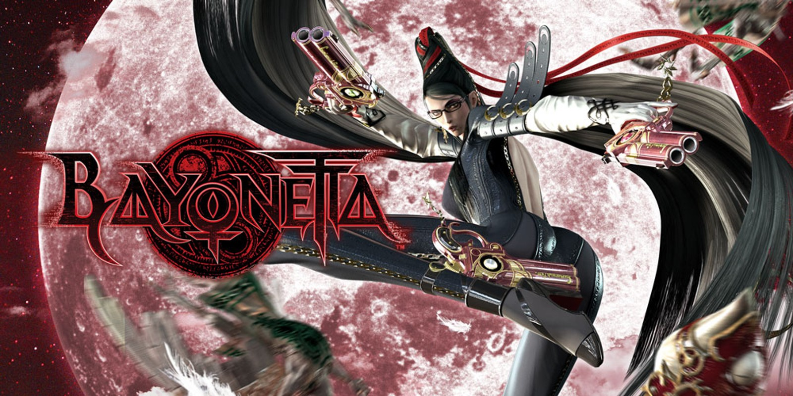
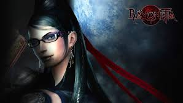
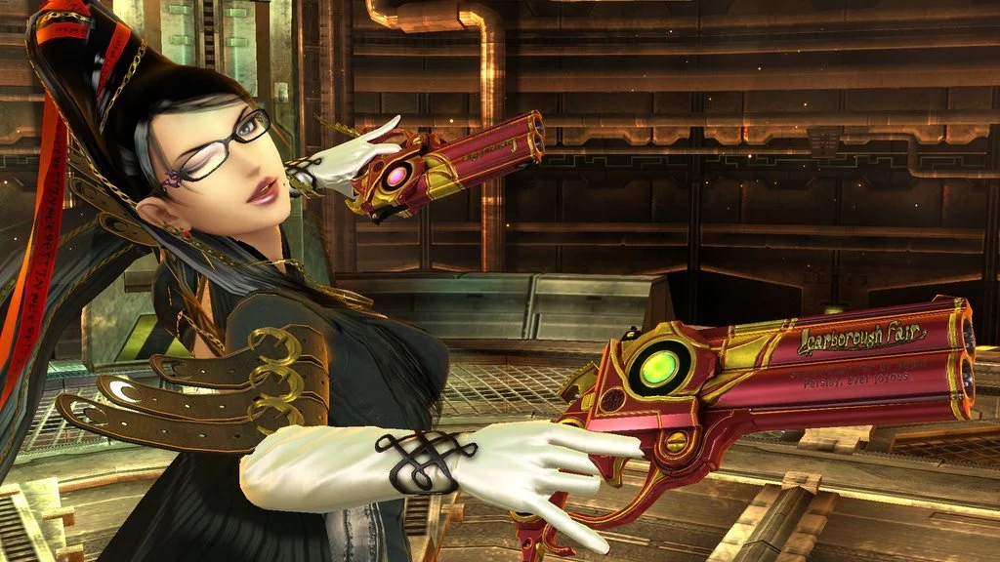

Bayonetta
Origenes
No se sorprenderá nadie al decir que en esta casa (en unos casos más que en otros)
se siente una especial devoción por Bayonetta y su figura, tanto por lo que representa
como personaje como por lo que significa la franquicia. El más especial,
por definición, es una primera entrega que expandió el concepto de los Hack and Slash
a través de una propuesta perfectamente orquestada por grandes nombres como Hideki Kamiya,
Yasuke Hashimoto, Hiroshi Shibata o Hiroshi Yamaguchi. El poso que ha dejado la obra de PlatinumGames
es imperecedero, latente, como una herencia eterna de todo a lo que los videojuegos de acción pura pueden
llegar a aspirar. Es sencillo parar a preguntarse a uno mismo su historia, origen e influencias,
el inicio de un camino sinuoso y con inevitables altibajos, pero que ha servido para alcanzar la excelencia
en gran parte de sus obras.

Como Contexto
En un ataúd sumergido en el fondo de lago de turbias aguas, una bruja renace. Descubre o vuelve a vivir la experiencia
épica de Bayonetta: disponible como parte del pack Bayonetta 2 Special Edition o como descarga de Nintendo eShop de Wii U.
La primera entrega de la saga Bayonetta, publicada originalmente en 2010, presentó al mundo el concepto de acción frenética,
una explosiva mezcla de acción dinámica y un estilo pícaro. Con un arma en cada mano y pie, Bayonetta destruye a sus oponentes
con ataques combo que resultan tan hermosos como brutales. Esquiva los ataques enemigos en el momento adecuado para activar el
Tiempo Brujo: dejarás a tus enemigos lentos e indefensos ante tus patadas, golpes y balas. Remátalos a continuación con un ataque
tortura. No habrá ángel que se interponga en el camino de Bayonetta.

Tal y como se cuenta en las decenas de publicaciones sobre el desarrollo de Bayonetta
(hay unos cuantos de ellos en la web de Platinum), comenzaron a trabajar en él a principios de 2007.
«Mi inspiración para crear a Bayonetta vino de una conversación que tuve con Hashimoto, el productor del juego,
cuando PlatinumGames acababa de fundarse», comentaba Kamiya. «Me dijo que le encantaría verme hacer otro de mis
juegos de acción y, como los últimos juegos en los que había trabajado tenían protagonistas masculinos
(Dante, Joe, Leon S. Kennedy, Issun), decidí que quería hacer algo diferente con este juego y apostamos por una protagonista femenina».
El que fuera director de Bayonetta también lideró en su momento Devil May Cry (que a su vez, ya es vox populi, salió de un intento
especialmente radical de convertir Resident Evil 4 en un juego con mucha más acción), un título donde Kamiya pudo expresar muchas de
sus ideas para convertirlo en un referente de los hack and slash. Este género, que de alguna forma se entiende como el salto a las tres
dimensiones de los beat em up, aún tenía mucho más que ofrecer a los ex-Clover, y Bayonetta supondría un paso más en su evolución con
respecto a su espectacular obra en Capcom.

Regresar